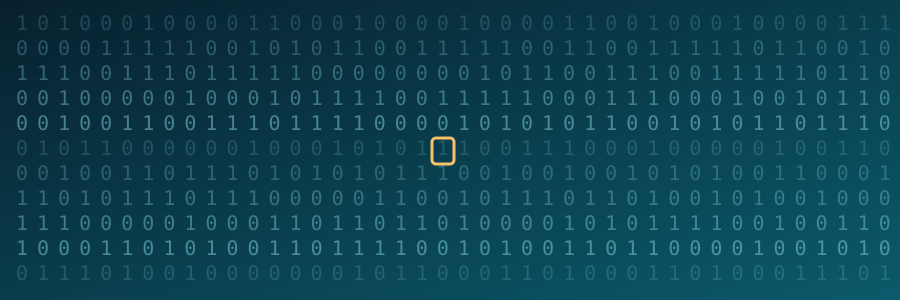
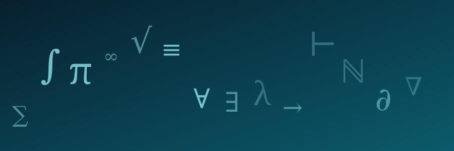
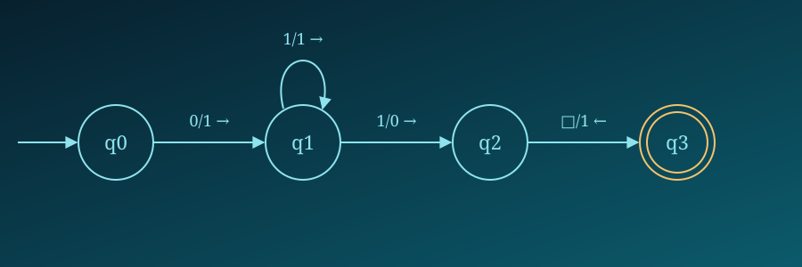
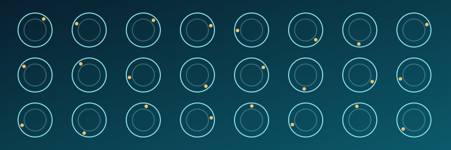
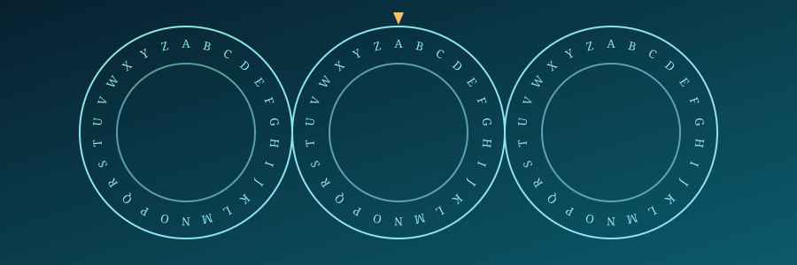
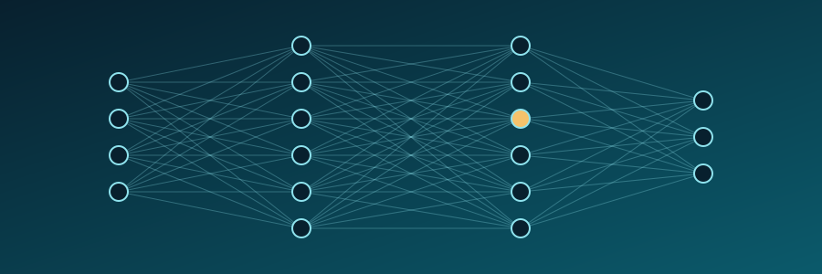

Alan Turing
Matemático, lógico, criptanalista e pioneiro da ciência da computação.
Alan Mathison Turing foi um matemático, lógico e cientista da computação britânico cuja obra ajudou a estabelecer os fundamentos teóricos da computação moderna. Seus estudos sobre algoritmos, computabilidade e máquinas abstratas influenciaram profundamente a ciência da computação e, posteriormente, o desenvolvimento da inteligência artificial.

Infância e educação
Turing demonstrou, desde cedo, grande interesse por ciências exatas, resolvendo problemas de forma independente e explorando ideias além do que era ensinado em sala de aula. Ainda jovem, destacou-se pela curiosidade incomum sobre matemática e sobre o funcionamento de sistemas lógicos, características que marcariam toda a sua trajetória intelectual.
Durante os anos escolares, nem sempre se adaptou bem a métodos de ensino tradicionais, mas encontrou apoio em professores que reconheceram seu talento singular para o raciocínio abstrato, o que o encaminhou progressivamente para os estudos avançados em matemática.

Universidade
Turing ingressou no King's College, em Cambridge, onde aprofundou seus estudos em matemática pura e lógica. Foi nesse ambiente acadêmico que teve contato com problemas fundamentais sobre os limites do que pode ser calculado, questão central da lógica matemática da época.
Esse período foi decisivo para sua formação intelectual, permitindo-lhe desenvolver as ideias que, pouco tempo depois, resultariam em uma de suas contribuições mais importantes: o conceito de máquina abstrata capaz de simular qualquer processo de cálculo.
Máquina de Turing
A Máquina de Turing é um modelo matemático abstrato criado para representar, de forma simples e rigorosa, o que significa "calcular" algo. Ela não é um computador físico, mas uma construção teórica: uma fita infinita dividida em células, uma cabeça de leitura e escrita, e um conjunto de regras que determinam como a máquina deve se mover e alterar os símbolos na fita.
Um algoritmo é, essencialmente, uma sequência finita e bem definida de passos para resolver um problema — exatamente o tipo de processo que a Máquina de Turing foi criada para representar.
A importância desse modelo está em sua capacidade de definir, com precisão, os limites do que pode ou não ser computado. Qualquer computador moderno, por mais complexo que seja, é, em termos teóricos, equivalente a uma Máquina de Turing — por isso o conceito continua sendo uma base fundamental da ciência da computação.
FITA
↑CABEÇA

Segunda Guerra Mundial
Durante a Segunda Guerra Mundial, Turing integrou a equipe de criptoanalistas britânicos em Bletchley Park, centro dedicado à decifração de comunicações militares interceptadas do lado do Eixo. Ali, aplicou seus conhecimentos de lógica e matemática a problemas práticos de altíssima complexidade e urgência.
O trabalho em Bletchley Park reunia diversos especialistas e envolvia tanto raciocínio matemático quanto o desenvolvimento de dispositivos eletromecânicos capazes de acelerar processos que, feitos manualmente, seriam inviáveis dentro do tempo necessário.

Código Enigma
A Enigma era uma máquina de cifragem utilizada pelas forças militares alemãs para embaralhar mensagens, tornando-as, em princípio, incompreensíveis a quem não possuísse a configuração correta. Sua importância estava em proteger informações estratégicas de operações militares.
De forma geral, a criptoanálise da época consistia em identificar padrões estatísticos e falhas de uso dentro do sistema de cifragem, permitindo reduzir o número de possibilidades a testar até tornar a decifração viável. Turing contribuiu de maneira significativa para esse esforço, participando do desenvolvimento de métodos e dispositivos que ajudaram a tornar esse processo mais rápido e sistemático.
Decifrar a Enigma não foi obra de uma única pessoa: envolveu equipes inteiras de matemáticos, linguistas e engenheiros trabalhando em conjunto ao longo de anos.
É importante destacar que esse trabalho foi um esforço coletivo, e não o resultado isolado de uma única pessoa — ainda que a contribuição de Turing tenha sido amplamente reconhecida como fundamental para os avanços obtidos nessa área.

Pós-guerra
Após o fim do conflito, Turing voltou sua atenção para o desenvolvimento da computação eletrônica, participando de projetos relacionados à construção de computadores programáveis, como o projeto do ACE (Automatic Computing Engine). Esse período consolidou sua transição de teórico da computação para participante ativo na construção de máquinas reais.
Nessa fase, também começou a refletir sobre temas que iam além do cálculo numérico, questionando até que ponto máquinas poderiam simular processos associados ao pensamento humano.
Teste de Turing
O Teste de Turing é um experimento conceitual proposto por Turing para discutir se uma máquina poderia apresentar comportamento indistinguível do de um ser humano durante uma conversa. A ideia central não é definir se a máquina "pensa" no sentido humano da palavra, mas se ela pode se comportar, em uma interação por texto, de forma equivalente a uma pessoa.
Essa proposta se tornou um marco na discussão filosófica e científica sobre inteligência artificial, influenciando debates que continuam relevantes até os dias atuais.
Inteligência artificial
As ideias de Turing sobre computabilidade e sobre a possibilidade de máquinas simularem comportamentos inteligentes lançaram as bases conceituais para o campo que, décadas depois, seria formalmente chamado de inteligência artificial. Ao propor perguntas sobre os limites e as possibilidades do raciocínio mecânico, Turing ajudou a estabelecer as primeiras questões que ainda orientam pesquisadores da área.
Seu trabalho não apresentou soluções definitivas, mas ofereceu um vocabulário conceitual e um ponto de partida teórico que permanece influente na forma como se discute inteligência artificial atualmente.

Legado
O legado de Alan Turing se estende por diversas áreas do conhecimento:
Computação: o conceito de Máquina de Turing continua sendo uma referência central para entender os limites teóricos dos computadores.
Matemática: suas contribuições à lógica e à teoria da computabilidade ajudaram a redefinir questões fundamentais sobre o que pode ser calculado.
Inteligência artificial: suas reflexões sobre máquinas pensantes inspiraram gerações de pesquisadores nessa área.
Criptografia: seu trabalho em Bletchley Park deixou métodos e abordagens que influenciaram o desenvolvimento posterior da criptoanálise.
Ciência: de forma mais ampla, sua trajetória é hoje lembrada como exemplo de como ideias teóricas podem transformar profundamente a prática científica e tecnológica.
Linha do tempo
1912
Nascimento
1931
Ingresso em Cambridge
1936
Publicação do trabalho sobre números computáveis
1939
Início do trabalho relacionado à guerra
1940
Desenvolvimento de métodos para criptanálise
1945
Trabalho no projeto de computador ACE
1950
Publicação do artigo relacionado ao Teste de Turing
1954
Falecimento
Conexão histórica
Décadas antes do trabalho de Alan Turing sobre os fundamentos teóricos da computação, Ada Lovelace já havia refletido sobre a possibilidade de máquinas realizarem operações seguindo instruções. Embora seus contextos históricos fossem muito diferentes, ambos ocupam lugares importantes na história das ideias que ajudaram a formar a computação.
Conheça Ada LovelaceReferências
- Encyclopaedia Britannica Biografia e contexto histórico sobre Alan Turing.
- Computer History Museum Acervo e materiais sobre a história da computação.
- Bletchley Park Informações históricas sobre o trabalho de Turing durante a Segunda Guerra Mundial.
- The Turing Archive Arquivo de documentos, manuscritos e escritos relacionados a Alan Turing.
- Alan Turing: The Enigma — Andrew Hodges Biografia detalhada de Alan Turing, abordando sua vida, trabalho matemático, criptanálise e contribuição para a computação.
- Computing Machinery and Intelligence — A. M. Turing Artigo original publicado em 1950 na revista Mind, no qual Turing discute a possibilidade de máquinas demonstrarem comportamento inteligente.